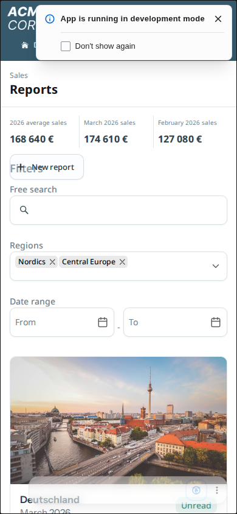
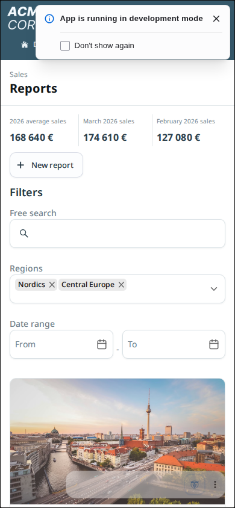
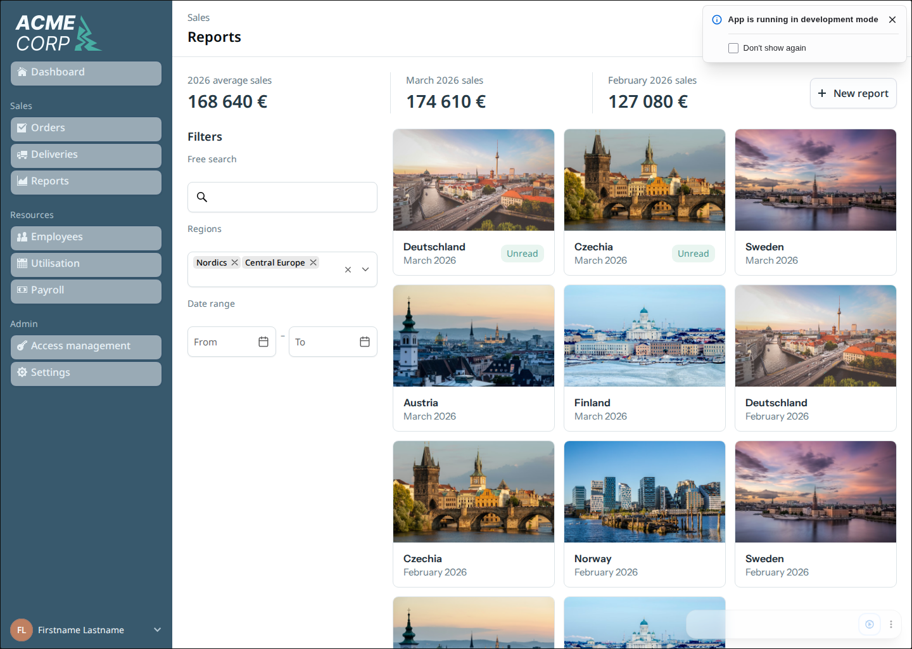
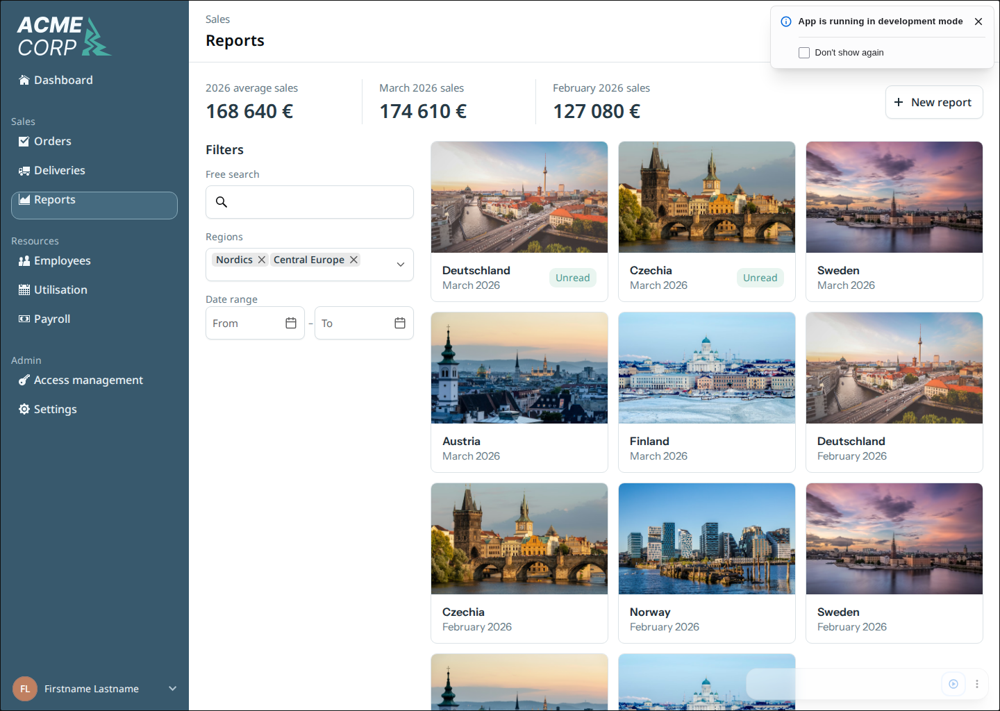
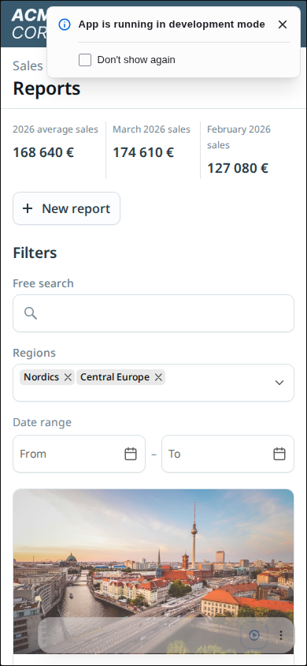
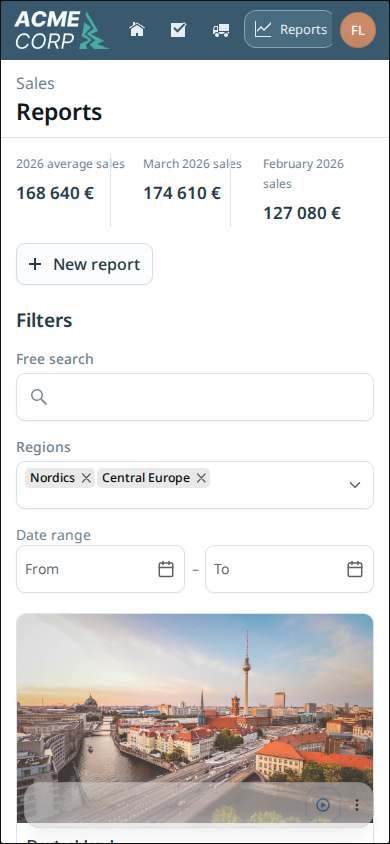
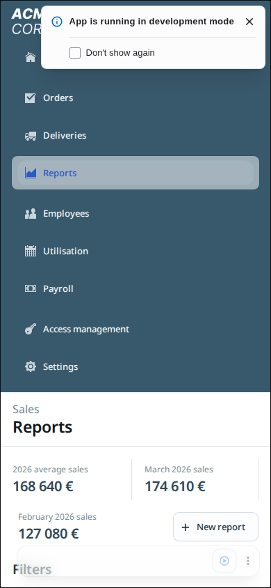
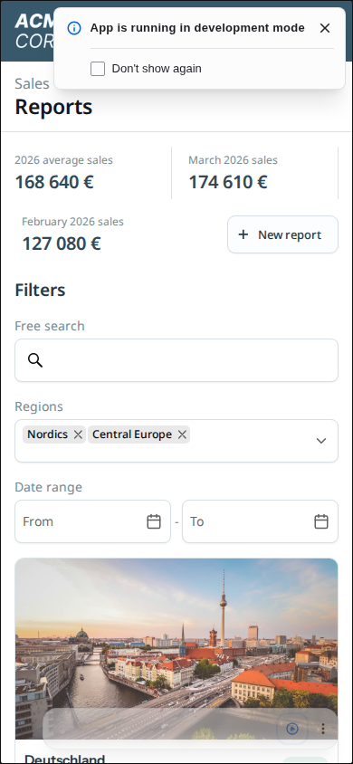

VaadinBench · Evidence report · 2 October 2026
What the layout analyzer actually did
The analyzer gave the agent a component geometry report and a screenshot of its running Reports view. The agent used that feedback during layout corrections. It did not implement fixes, compare the page to the reference design, or prove the view passed its tests.
What this establishes
The integration worked, and the reports supplied useful layout measurements. Recorded changes include moving mobile filters almost 500 pixels upward, reducing filter control heights, removing a root-height overflow warning, and correcting a mobile summary overlap.
The experiment does not establish a consistent quality or speed improvement. The analyzer runs beat the control on time and visual score in two of four pairs. All eight implementations failed the final verifier. The evidence below distinguishes measured changes from claims about what caused them.
Experiment and method
One task, flow-reports-strict, with four independent attempts per arm: vanilla control and analyzer-enabled vanilla. All used openai/gpt-6-luna at xhigh, Vaadin 25.3.0, Copilot enabled, and no agent-facing ui-check. Harbor trials ran sequentially. Pair labels do not imply matched random seeds. The analyzer was preview 0.1.1, with full relationship reports enabled.
Source commit: b78e016e138014909c0a81fc43008d2389623834. This report audits completed shell events, trajectory image references, capture metadata, geometry reports and final verifier results. Command ordinals are completion order, which can differ from invocation order when an agent starts desktop and mobile captures together.
How the agent used it
- Implemented and started the application, then waited for report cards to render.
- Ran
layout-checkagainsthttp://localhost:8080/reportsat desktop (1440 × 1024) and mobile (390 × 844) sizes. - Received the Markdown report directly in command output. Each capture also wrote
layout.md,layout.json,capture.jsonandpage.png. - Read geometry/findings and sometimes opened the generated screenshot or searched a saved report.
- Edited Java/CSS with ordinary coding tools, then captured again to inspect the result.
The wrapper uses captureLayout from @vaadin/layout-analyzer-preview/playwright. It checks Copilot availability and the ready element’s presence in the component tree. Each call gets a fresh browser context. --state is only a label; it does not interact with the UI.
Exactly how much it was used
| Trial | Captures D / M | Capture time | Report characters | Prepare calls | Repeated report text¹ | Shell events / Playwright² |
|---|---|---|---|---|---|---|
| Pair 1 (pilot) | 8 (5 / 3) | 114.035s | 141,756 | 0 | 1 | 86 / 46 |
| Pair 2 | 8 (5 / 3) | 102.844s | 98,101 | 0 | 2 | 107 / 71 |
| Pair 3 | 11 (6 / 5) | 149.623s | 148,221 | 9 | 3 | 102 / 57 |
| Pair 4 | 10 (5 / 5) | 126.972s | 119,787 | 0 | 4 | 132 / 95 |
Total: 493.474 capture seconds and 507,865 report characters. This is summed capture duration, not necessarily additional wall time. One extra shell event requested analyzer help/availability (pair 2). There were 427 completed shell events across analyzer trials.
¹ Captures beyond the first occurrence of an identical Markdown SHA-256 within a trial. Identical text does not prove the screenshot or application state was identical. ² Shell events containing playwright-cli, not individual CLI invocations; a shell event may chain several commands. Counts overlap with other activity.
All 37 captures reported Copilot available, a ready element in the tree, no coverage warnings and no truncation. All had zero source references, so this experiment did not exercise source-location navigation.
Only pair 3 used --prepare (9 of its 11 captures). Its hook dismissed the development notice, later also checking “Don’t show again.” No hook applied report filters or opened the date calendar. All captures examined the baseline reports page; final labels were sometimes reused before further edits.
What changed while the analyzer was being used
These are measurements from the actual captures, supported by agent notes about report or screenshot use. They establish before/after changes within the workflow, not that the analyzer alone caused the improvements. The agents also used ordinary browser screenshots and DOM inspection.
Pair 1: mobile summary overlap
An intermediate mobile capture reported an overflow involving the New report button. The agent said it changed the summary to grow naturally on narrow screens. In the later capture, that button overflow finding was absent, and the page grew by 43 pixels. Separately, the desktop account avatar moved from y=1119.25 (below the 1024px viewport) to y=968 after sidebar sizing changes.




Selected measured boxes (x, y, width, height)
Before ReportsView: 0, 0, 390, 3831.47 Button "New report": 16, 253, 122, 42 Span "Filters": 16, 264, 358, 25 After ReportsView: 0, 0, 390, 3874.47 Button "New report": 16, 253, 122, 42 Span "Filters": 16, 307, 358, 25
Pair 2: excess control height
The agent explicitly identified hidden label-row space in the report and moved labels into the Vaadin controls. Desktop TextField height fell from 68 to 48px; MultiSelectComboBox from 76 to 48px; DatePickers from 68 to 48px. The dates moved from y=495 to y=441. This is a concrete geometry improvement, although the final view still failed the visual threshold.




Selected measured boxes (x, y, width, height)
Before TextField: 296, 267, 300, 68 MultiSelectComboBox: 296, 377, 300, 76 DatePicker: 296, 495, 140, 68 DatePicker: 456, 495, 140, 68 After TextField: 296, 267, 300, 48 MultiSelectComboBox: 296, 357, 300, 48 DatePicker: 296, 441, 143, 48 DatePicker: 453, 441, 143, 48
Pair 3: fixed-height mobile root
The first mobile report showed a 390×844 root with a much taller child and an ESCAPES finding extending 2940px beyond its parent. The agent removed the fixed root height. The final root was 390×3778.47, and that escape finding disappeared. Subsequent screenshot inspection also caught a desktop sidebar-footer regression, requiring another correction.




Selected measured boxes (x, y, width, height)
Before ReportsView: 0, 0, 390, 844 After ReportsView: 0, 0, 390, 3778.47
Pair 4: mobile filters moved into view
The initial mobile shell remained vertically stacked. Filters started at y=805.33 and its text field at y=871.33, beyond the 844px viewport. After the shell was changed to a flex Div, Filters started at y=308 and the text field at y=374: 497.33px upward. The agent used the initial geometry/screenshot feedback, but the initial mobile report had no findings classified as broken—showing why warning count is not a quality score.




Selected measured boxes (x, y, width, height)
Before Button "New report": 249, 735.33, 123, 42 H2 "Filters": 18, 805.33, 56, 25 TextField: 18, 871.33, 354, 48 After Button "New report": 251, 238, 123, 42 H2 "Filters": 16, 308, 56, 25 TextField: 16, 374, 358, 48
What should not be credited to the analyzer
- Search/filter/calendar interactions were exercised with ordinary Playwright commands. Capturing the initial page does not verify those behaviors.
- Java API mismatches, multi-select chip configuration, compilation, server restarts and stale styles/bundles required ordinary development and browser tools.
- The analyzer never received the reference image as an input and never produced a similarity score. Reference matching remained agent judgment; the independent final verifier supplied visual scores.
- No analyzer command repaired code. The agent made every source edit.
Friction and limits observed
- Recurring Avatar CUT findings persisted after other improvements. Agents treated some as geometry noise; do not assume every clipping finding is a real visual defect, or dismiss all avatar problems as false positives.
- Many captures repeated identical report text. Large reports added context volume: median uncached input was about 52.5% higher in analyzer runs.
- Development notice overlays required special handling. Only one trial adopted a prepare hook; other agents also used ordinary browser screenshots to inspect a clean page.
- The pilot tried to open
screenshot.pngonce, but the saved filename ispage.png; the agent then corrected it. - Geometry applies only to the captured viewport and current UI state. No source references were available; readiness checks cannot prove all future asynchronous updates are complete.
Exact capture command ledger
All 37 shell commands are below, with their actual labels and ready selectors. Expand a trial for the full commands, capture timing and linked reports. Commands that create a prepare hook include that script verbatim. The downloadable usage JSON also contains findings, measured boxes, image-view references and explicit artifact-read commands. Raw trajectories are deliberately excluded from the public report.
Pair 1: 8 captures — flow-reports-strict__aZqCNpp
1. capture-xcRSWr · 1440 × 1024
2026-10-01T18:58:59.873Z · 14.939s · shell completion #11 · exit 0
layout-check http://localhost:8080/reports --ready '[data-testid="report-cards"] .report-card' --state initial --width 1440 --height 1024
Report · Screenshot · Metadata

2. capture-G9iilw · 390 × 844
2026-10-01T18:58:59.879Z · 14.825s · shell completion #10 · exit 0
layout-check http://localhost:8080/reports --ready '[data-testid="report-cards"] .report-card' --state initial --width 390 --height 844
Report · Screenshot · Metadata

3. capture-DFpMfW · 1440 × 1024
2026-10-01T19:04:19.614Z · 13.094s · shell completion #22 · exit 0
layout-check http://localhost:8080/reports --ready '[data-testid="report-cards"] .report-card' --state initial-tuned --width 1440 --height 1024
Report · Screenshot · Metadata

4. capture-tY9zTr · 1440 × 1024
2026-10-01T19:10:01.436Z · 13.384s · shell completion #36 · exit 0
layout-check http://localhost:8080/reports --ready '[data-testid="report-cards"] .report-card' --state final-desktop --width 1440 --height 1024
Report · Screenshot · Metadata

5. capture-wNLPE9 · 1440 × 1024
2026-10-01T19:13:24.534Z · 14.677s · shell completion #43 · exit 0
layout-check http://localhost:8080/reports --ready '[data-testid="report-cards"] .report-card' --state complete-desktop --width 1440 --height 1024
Report · Screenshot · Metadata

6. capture-4x95LL · 390 × 844
2026-10-01T19:13:24.534Z · 14.489s · shell completion #42 · exit 0
layout-check http://localhost:8080/reports --ready '[data-testid="report-cards"] .report-card' --state complete-mobile --width 390 --height 844
Report · Screenshot · Metadata
7. capture-bzVjKW · 1440 × 1024
2026-10-01T19:18:01.530Z · 14.435s · shell completion #57 · exit 0
layout-check http://localhost:8080/reports --ready '[data-testid="report-cards"] .report-card' --state final-desktop --width 1440 --height 1024
Report · Screenshot · Metadata

8. capture-G1Bat9 · 390 × 844
2026-10-01T19:18:01.554Z · 14.192s · shell completion #56 · exit 0
layout-check http://localhost:8080/reports --ready '[data-testid="report-cards"] .report-card' --state final-mobile --width 390 --height 844
Report · Screenshot · Metadata
Explicit artifact reads
Reports were also returned automatically on stdout for every capture; these reads are additional activity.
#16: find /logs/agent/layout/capture-xcRSWr -maxdepth 2 -type f -print
Pair 2: 8 captures — flow-reports-strict__bPY9FBG
1. capture-9tzNNq · 1440 × 1024
2026-10-01T19:58:47.778Z · 13.130s · shell completion #19 · exit 0
layout-check http://localhost:8080/reports --ready '[data-testid="report-cards"] .report-card[data-report-id="r11"]' --state initial --width 1440 --height 1024
Report · Screenshot · Metadata
2. capture-gYtUij · 390 × 844
2026-10-01T19:59:14.018Z · 12.727s · shell completion #20 · exit 0
layout-check http://localhost:8080/reports --ready '[data-testid="report-cards"] .report-card[data-report-id="r11"]' --state initial-mobile --width 390 --height 844
Report · Screenshot · Metadata

3. capture-rLxHtY · 1440 × 1024
2026-10-01T20:11:50.265Z · 12.967s · shell completion #49 · exit 0
layout-check http://localhost:8080/reports --ready '[data-testid="report-cards"] .report-card[data-report-id="r11"]' --state refined-desktop --width 1440 --height 1024
Report · Screenshot · Metadata

4. capture-HnxlOB · 1440 × 1024
2026-10-01T20:19:00.217Z · 12.958s · shell completion #73 · exit 0
layout-check http://localhost:8080/reports --ready '[data-testid="report-cards"] .report-card[data-report-id="r11"]' --state final-desktop --width 1440 --height 1024
Report · Screenshot · Metadata

5. capture-GuEkkT · 1440 × 1024
2026-10-01T20:21:11.417Z · 12.866s · shell completion #75 · exit 0
layout-check http://localhost:8080/reports --ready '[data-testid="report-cards"] .report-card[data-report-id="r11"]' --state final-desktop --width 1440 --height 1024
Report · Screenshot · Metadata

6. capture-iOQiSy · 390 × 844
2026-10-01T20:21:29.057Z · 12.668s · shell completion #76 · exit 0
layout-check http://localhost:8080/reports --ready '[data-testid="report-cards"] .report-card[data-report-id="r11"]' --state final-mobile --width 390 --height 844
Report · Screenshot · Metadata

7. capture-XsCx2d · 1440 × 1024
2026-10-01T20:23:57.008Z · 12.886s · shell completion #81 · exit 0
layout-check http://localhost:8080/reports --ready '[data-testid="report-cards"] .report-card[data-report-id="r11"]' --state final-desktop --width 1440 --height 1024
Report · Screenshot · Metadata
8. capture-XOzbkj · 390 × 844
2026-10-01T20:24:15.025Z · 12.642s · shell completion #82 · exit 0
layout-check http://localhost:8080/reports --ready '[data-testid="report-cards"] .report-card[data-report-id="r11"]' --state final-mobile --width 390 --height 844
Report · Screenshot · Metadata

Explicit artifact reads
Reports were also returned automatically on stdout for every capture; these reads are additional activity.
#21: find /logs/agent/layout/capture-9tzNNq /logs/agent/layout/capture-gYtUij -maxdepth 2 -type f -printf '%p\n'
Pair 3: 11 captures — flow-reports-strict__AGLVUjL
1. capture-75GJkX · 1440 × 1024
2026-10-01T21:48:41.466Z · 13.187s · shell completion #8 · exit 0
layout-check http://localhost:8080/reports --ready '[data-testid="report-cards"] .report-card' --state initial --width 1440 --height 1024
Report · Screenshot · Metadata

2. capture-y2lu4N · 390 × 844
2026-10-01T21:49:05.621Z · 12.668s · shell completion #9 · exit 0
layout-check http://localhost:8080/reports --ready '[data-testid="report-cards"] .report-card' --state initial --width 390 --height 844
Report · Screenshot · Metadata
3. capture-dsoHpg · 1440 × 1024
2026-10-01T21:56:57.283Z · 12.838s · shell completion #28 · exit 0
cat > /tmp/reports-initial.mjs <<'EOF'
export async function prepare(page) {
const closeButton = page.getByRole('button', { name: 'Close' });
if (await closeButton.count()) {
await closeButton.first().click().catch(() => {});
}
await page.locator('[data-testid="report-cards"] .report-card').first().waitFor({ state: 'visible' });
}
EOF
layout-check http://localhost:8080/reports --ready '[data-testid="report-cards"] .report-card' --state initial --prepare /tmp/reports-initial.mjs --width 1440 --height 1024Report · Screenshot · Metadata

4. capture-obCPaS · 1440 × 1024
2026-10-01T22:00:58.916Z · 12.910s · shell completion #36 · exit 0
layout-check http://localhost:8080/reports --ready '[data-testid="report-cards"] .report-card' --state initial --prepare /tmp/reports-initial.mjs --width 1440 --height 1024
Report · Screenshot · Metadata

5. capture-kQvYNX · 390 × 844
2026-10-01T22:01:17.073Z · 12.634s · shell completion #37 · exit 0
layout-check http://localhost:8080/reports --ready '[data-testid="report-cards"] .report-card' --state initial --prepare /tmp/reports-initial.mjs --width 390 --height 844
Report · Screenshot · Metadata

6. capture-yRTjzS · 1440 × 1024
2026-10-01T22:12:05.363Z · 13.750s · shell completion #66 · exit 0
cat > /tmp/reports-initial.mjs <<'EOF'
export async function prepare(page) {
await page.locator('[data-testid="report-cards"] .report-card').first().waitFor({ state: 'visible' });
await page.waitForTimeout(500);
const quiet = page.getByRole('checkbox', { name: "Don't show again" });
if (await quiet.count() && !(await quiet.isChecked().catch(() => false))) {
await quiet.check().catch(() => {});
}
const close = page.getByRole('button', { name: 'Close' });
if (await close.count()) await close.first().click().catch(() => {});
await page.waitForTimeout(250);
}
EOF
layout-check http://localhost:8080/reports --ready '[data-testid="report-cards"] .report-card' --state initial --prepare /tmp/reports-initial.mjs --width 1440 --height 1024Report · Screenshot · Metadata

7. capture-R6yow8 · 390 × 844
2026-10-01T22:12:25.446Z · 13.068s · shell completion #67 · exit 0
layout-check http://localhost:8080/reports --ready '[data-testid="report-cards"] .report-card' --state initial --prepare /tmp/reports-initial.mjs --width 390 --height 844
Report · Screenshot · Metadata

8. capture-3BBEV1 · 1440 × 1024
2026-10-01T22:17:03.533Z · 14.729s · shell completion #72 · exit 0
layout-check http://localhost:8080/reports --ready '[data-testid="report-cards"] .report-card' --state initial --prepare /tmp/reports-initial.mjs --width 1440 --height 1024
Report · Screenshot · Metadata

9. capture-ySA9oR · 390 × 844
2026-10-01T22:17:03.547Z · 14.524s · shell completion #71 · exit 0
layout-check http://localhost:8080/reports --ready '[data-testid="report-cards"] .report-card' --state initial --prepare /tmp/reports-initial.mjs --width 390 --height 844
Report · Screenshot · Metadata

10. capture-PjAoZB · 1440 × 1024
2026-10-01T22:23:53.839Z · 14.760s · shell completion #96 · exit 0
layout-check http://localhost:8080/reports --ready '[data-testid="report-cards"] .report-card' --state initial --prepare /tmp/reports-initial.mjs --width 1440 --height 1024
Report · Screenshot · Metadata

11. capture-xcfXcl · 390 × 844
2026-10-01T22:23:53.842Z · 14.555s · shell completion #95 · exit 0
layout-check http://localhost:8080/reports --ready '[data-testid="report-cards"] .report-card' --state initial --prepare /tmp/reports-initial.mjs --width 390 --height 844
Report · Screenshot · Metadata
Explicit artifact reads
Reports were also returned automatically on stdout for every capture; these reads are additional activity.
#10: find /logs/agent/layout/capture-75GJkX /logs/agent/layout/capture-y2lu4N -maxdepth 1 -type f -printf '%p %s bytes\n' | sort; playwright-cli open http://localhost:8080/reports --browser chromium
#68: rg -n 'CUT|OVERFLOW|Avatar|Layout artifacts|Div 0,0|HorizontalLayout|Metrics|metrics|Button "New report"|Findings' /logs/agent/layout/capture-yRTjzS/layout.md /logs/agent/layout/capture-R6yow8/layout.md
#73: rg -n 'CUT|OVERFLOW|Avatar|metrics|Button "New report"|Date range|DatePicker|Div 620,|Div 890,|Div 1160,' /logs/agent/layout/capture-3BBEV1/layout.md | head -30
#74: sed -n '128,160p' /logs/agent/layout/capture-3BBEV1/layout.md && sed -n '72,110p' /logs/agent/layout/capture-3BBEV1/layout.md
#75: rg -n 'Date range|DatePicker|date-range' /logs/agent/layout/capture-3BBEV1/layout.md | head -10 && rg -n 'HorizontalLayout|Avatar' /logs/agent/layout/capture-3BBEV1/layout.md | head -5
Pair 4: 10 captures — flow-reports-strict__YAzn2zW
1. capture-Pf6d50 · 1440 × 1024
2026-10-01T22:34:18.613Z · 13.217s · shell completion #8 · exit 0
layout-check http://localhost:8080/reports --ready '.report-card:nth-child(11)' --state initial --width 1440 --height 1024
Report · Screenshot · Metadata

2. capture-zkA14H · 390 × 844
2026-10-01T22:34:44.502Z · 12.686s · shell completion #9 · exit 0
layout-check http://localhost:8080/reports --ready '.report-card:nth-child(11)' --state initial --width 390 --height 844
Report · Screenshot · Metadata
3. capture-D0nehC · 1440 × 1024
2026-10-01T22:46:49.643Z · 12.849s · shell completion #49 · exit 0
layout-check http://localhost:8080/reports --ready '.report-card:nth-child(11)' --state initial --width 1440 --height 1024
Report · Screenshot · Metadata

4. capture-RlplKx · 390 × 844
2026-10-01T22:47:59.302Z · 12.661s · shell completion #53 · exit 0
layout-check http://localhost:8080/reports --ready '.report-card:nth-child(11)' --state initial --width 390 --height 844
Report · Screenshot · Metadata

5. capture-B3fPeM · 1440 × 1024
2026-10-01T22:48:48.134Z · 12.814s · shell completion #54 · exit 0
layout-check http://localhost:8080/reports --ready '.report-card:nth-child(11)' --state initial --width 1440 --height 1024
Report · Screenshot · Metadata

6. capture-Zvnqdv · 390 × 844
2026-10-01T22:49:11.179Z · 12.360s · shell completion #55 · exit 0
layout-check http://localhost:8080/reports --ready '.report-card:nth-child(11)' --state initial --width 390 --height 844
Report · Screenshot · Metadata

7. capture-HERhWR · 1440 × 1024
2026-10-01T22:50:29.654Z · 12.858s · shell completion #57 · exit 0
layout-check http://localhost:8080/reports --ready '.report-card:nth-child(11)' --state initial --width 1440 --height 1024
Report · Screenshot · Metadata

8. capture-pPhJPQ · 390 × 844
2026-10-01T22:50:46.409Z · 12.650s · shell completion #58 · exit 0
layout-check http://localhost:8080/reports --ready '.report-card:nth-child(11)' --state initial --width 390 --height 844
Report · Screenshot · Metadata

9. capture-j7eGbA · 1440 × 1024
2026-10-01T22:56:40.585Z · 12.473s · shell completion #103 · exit 0
layout-check http://localhost:8080/reports --ready '.report-card:nth-child(11)' --state initial --width 1440 --height 1024
Report · Screenshot · Metadata

10. capture-dhXHXN · 390 × 844
2026-10-01T22:59:05.052Z · 12.404s · shell completion #129 · exit 0
layout-check http://localhost:8080/reports --ready '.report-card:nth-child(11)' --state initial --width 390 --height 844
Report · Screenshot · Metadata
Explicit artifact reads
Reports were also returned automatically on stdout for every capture; these reads are additional activity.
#13: ls -la /logs/agent/layout/capture-Pf6d50 /logs/agent/layout/capture-zkA14H && cat /logs/agent/layout/capture-Pf6d50/capture.json
#50: rg -n -A8 -B4 'Avatar' /logs/agent/layout/capture-D0nehC/layout.md
#59: rg -n -A4 -B1 'CUT|SCROLLS INSIDE|EMPTY|Findings' /logs/agent/layout/capture-HERhWR/layout.md /logs/agent/layout/capture-pPhJPQ/layout.md
#102: rg -n -A4 -B3 'Avatar|account-button' /logs/agent/layout/capture-HERhWR/layout.md
Did this translate into better results?
| Pair | Control time | Analyzer time | Control visual | Analyzer visual |
|---|---|---|---|---|
| 1 | 44.13 min | 33.39 min | 0.7986 | 0.8278 |
| 2 | 36.76 min | 39.55 min | 0.8359 | 0.8086 |
| 3 | 32.15 min | 43.21 min | 0.8457 | 0.8231 |
| 4 | 59.37 min | 32.91 min | 0.7221 | 0.7591 |
Median agent time was 40m27s control versus 36m28s analyzer (9.8% lower). Median visual aggregate was 0.8173 versus 0.8159, essentially unchanged. These are four samples per arm on one task; the time difference is not a reliable estimate of a general speedup. Agent timing excludes image setup and final verification.
All eight attempts failed all three verifier categories. Visual grading required aggregate ≥0.90 plus regional floors. Every implementation omitted vaadin-card, which blocked component checks and the interaction verifier’s card locator. That does not establish that every implemented filter was broken. The task requested suitable standard Vaadin components generally, without explicitly naming vaadin-card.
Recommendation
Keep the analyzer available as an optional diagnostic aid. Its strongest demonstrated contribution is concrete geometry feedback during responsive layout repair. The next useful test is a working canonical Vaadin view with known layout defects: compare diagnosis and repair time with and without the tool, hold component correctness constant, and capture the specific broken states using prepare hooks. That would isolate its value more clearly than another full view implementation.